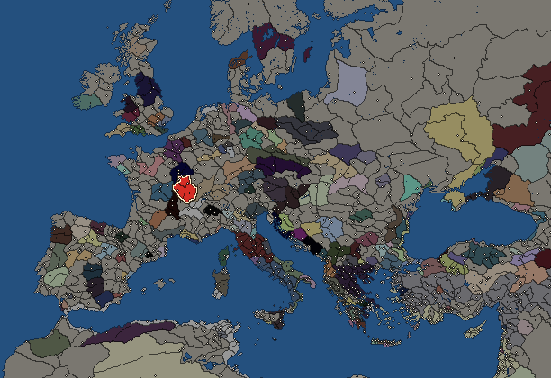
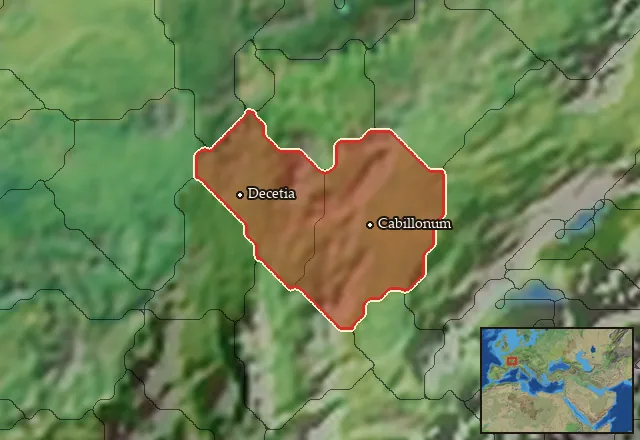

RTR: Imperium Surrectum
RTR: Imperium SurrectumAedui


- difficulty Medium
- Gallic culture
- believes
 Celtic
Celtic - 3 settlements
- capital Cabillonum
- 8,400 manpower
- 4 characters
- 19 faction units
- 431 regional units
The campaign brief
"The Gauls are terrifying in aspect and their voices are deep and altogether harsh; when they meet together they converse with few words and in riddles, hinting darkly at things for the most part and using one word when they mean another; and they like to talk in superlatives, to the end that they may extol themselves and depreciate all other men. They are also boasters and threateners and are fond of pompous language, and yet they have sharp wits and are not without cleverness at learning." – Diodorus Siculus, Library of History, 5.31
Mighty is our people, numerous are our clients, and blessed by the gods are our elders! The tale of our proud state begins with the deposition of the tyrannical king who held the region under his yoke and imposed misery on us all. The Aeduan nobility, with the support of the druids, challenged the power of the king before the assembled people. He had no choice but to flee and seek refuge in his fortress on Mount Morvinnico [Morvan]. Determined to free the country from his oppressive reign once and for all, we formed a coalition with the Segusiavians, and went to take his fortress by force.
Unfortunately, despaired by the fall of his kingdom, he appealed to the Lingones, a neighboring people whose friendship he had acquired. A first battle took place; it was a tragedy for all the nations involved. For this cursed king, too much blood was shed. Thankfully, the leader of our coalition and the gutuater managed to make an agreement with our neighbors, the powerful Sequanians. In exchange for their support, the Aeduans agreed to open up trade and to share a common currency with them to facilitate its flourishing.
The Lingones, frightened at the idea of facing such a powerful coalition, decided to abandon the cruel king themselves. In compensation for the bloodshed, they agreed to give us the fortress of Alesia and its lands, on condition that they would be included in our monetary and commercial alliance with the Sequanians. It is true that they were primarily concerned by the hegemony that our coalition had created by establishing its control over the Souconna from Cabillonum and Lugdunum. Was it not by sowing seeds of fear and distrust about these events that the terrible king had convinced them to fight his war in the first place?
Fortunately, through wisdom and diplomacy, a second bloodbath was avoided, and a new era of prosperity could begin for our people. The king was offered to the gods, put to death by the gutuater himself in his fortress at Bibracte. The country freed from his defiling presence, it was necessary to set up a new power. In order to avoid the drifts of those who crave for dominance, it was decided that a senate would be set up. Made up of the best nobility, they would have the power to elect the magistrates in charge of the country. A Vergobret is appointed every year to make decisions, administer justice and manage the country.
The history of our state, therefore, is a reminder that we will no longer accept tyranny imposed by others. The power of a people should not depend on the power of its king. The prosperity of a people should not depend on the crumbs distributed by a warlike lord, plundering and ravaging both within and outside the country. We, the Aedui, proud Gauls all, will unite to face anyone who seeks to impose his rule on us without the consent of our people!
Starting settlements
Aedui begins with 3 settlements and 8,400 manpower.
| Settlement | Region | Size | Manpower | Already built | Settlement | Region | Size | Manpower | Already built |
|---|---|---|---|---|---|---|---|---|---|
| Cabillonum (capital) | Aeduia | large town | 4,200 | 11 buildings | Alesia | Mandubia-Blannovia | town | 2,200 | 4 buildings |
| Decetia | Aeduia Occidentalis | town | 2,000 | 4 buildings |
What is already built in each settlement
Cabillonum, in Aeduia: Governor's Villa, Wooden Palisade, Small Granary (Food trade), Homeland, Cisterns (Sanitation), Region Information Scroll, Roads, Local Barter, Basic Armoury, Shrine, Contour Furrows (Crops)
Alesia, in Mandubia-Blannovia: Governor's House, Indirect Rule, Region Information Scroll, Lumber Camp (Rural)
Decetia, in Aeduia Occidentalis: Governor's House, Homeland, Region Information Scroll, Local Barter
Homeland
Aedui's homeland is 2 regions. Only there can it install the Homeland government (more on homelands).

Starting diplomacy
Allied with (2):  Bituriges ·
Bituriges ·  Senones
Senones
Trade agreements with (2):  Bituriges ·
Bituriges ·  Senones
Senones
At peace with every other faction.
Like every faction, it is also at war with the  Free Peoples, who hold every settlement no faction does.
Free Peoples, who hold every settlement no faction does.
Starting characters
| Name | Role | Age | Name | Role | Age | Name | Role | Age | Name | Role | Age |
|---|---|---|---|---|---|---|---|---|---|---|---|
| Dumnorix | General | 35 | Bellovesus | General | 32 | Diviciacus | General | 55 | Wotecorix | General | 55 |
Reforms
Open to every faction: Military innovations have arrived!, Second wave of military innovations have arrived!.
Units you can recruit
The same as in the main campaign.